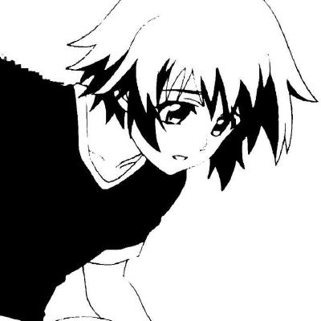

Hey, I'm Vince.
I make Discord bots, backend experiments, and small tools that are useful enough to keep alive.
Most of my code ends up on GitHub. The less serious side lives on iqad.baby.
Right now I'm learning more backend, hosting, and how to make bots less painful to run.
You can reach me through GitHub.